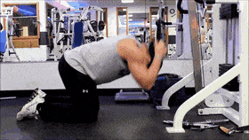
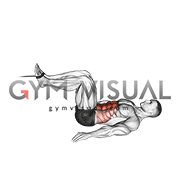

Crunch
1.Set the weight and height of the cable machine, attaching a rope handle to the high pulley.
2.Kneel down facing the machine and hold the rope at the back of your head, elbows bent.
3. Slowly crunch your torso forward, bringing your elbows towards your knees, and exhale. Pause at the bottom, then return to starting position and repeat for desired reps.

Reverse Crunch
1. Attach a rope handle to the low pulley of a cable machine and lie down facing the machine with your head towards the pulley.
2.Place your feet in the handles of the rope and lift your legs until they are perpendicular to the floor.
3. Slowly lower your legs by curling your hips towards your chest, keeping your abs engaged and maintaining control.
